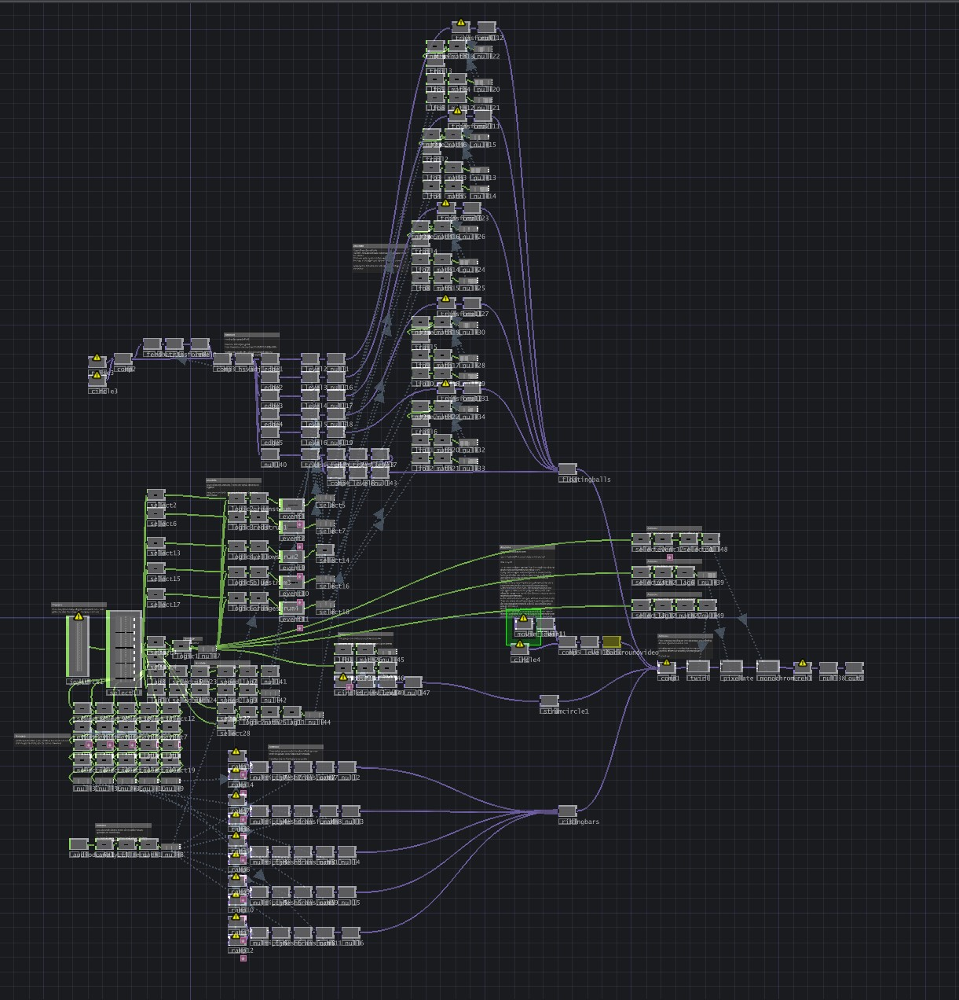
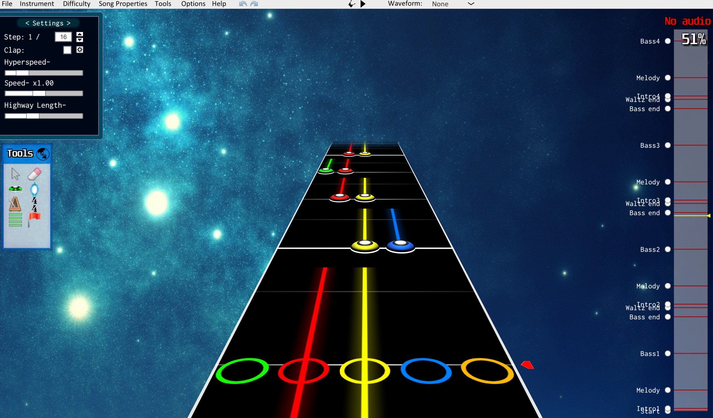

Project Summary
CloneZero was my first try at an interactive installation. The goal was to have users sit on the mat and pickup and play the Wiitar. There is a constantly cycling custom song that encourages players to play the Wiitar, as they do the Wiitar buttons are input into Touchdesigner and output to the projector on the wall.
My main goal with this installation was to experiment with the joystick CHOP, I tried to have each button and toggle affect the projection in a different way. Watch the demo video below to see the final work.
The five neck buttons (green, red, yellow, blue, orange) correspond to the the same coloured moving bars. The joystick corresponds to the muticoloured ball that users can move about the screen. The whammy bar angles the entire video. Lastly the star power button turns the image black and white for a few seconds.
Click here to download and read my long form reflection and research log, as well as view brainstorming images and read my annotated bibliography.
Project Videos
Demo Video
A short video of me interacting with my piece.
Images
Click on any image to view it fullscreen in a new tab.

